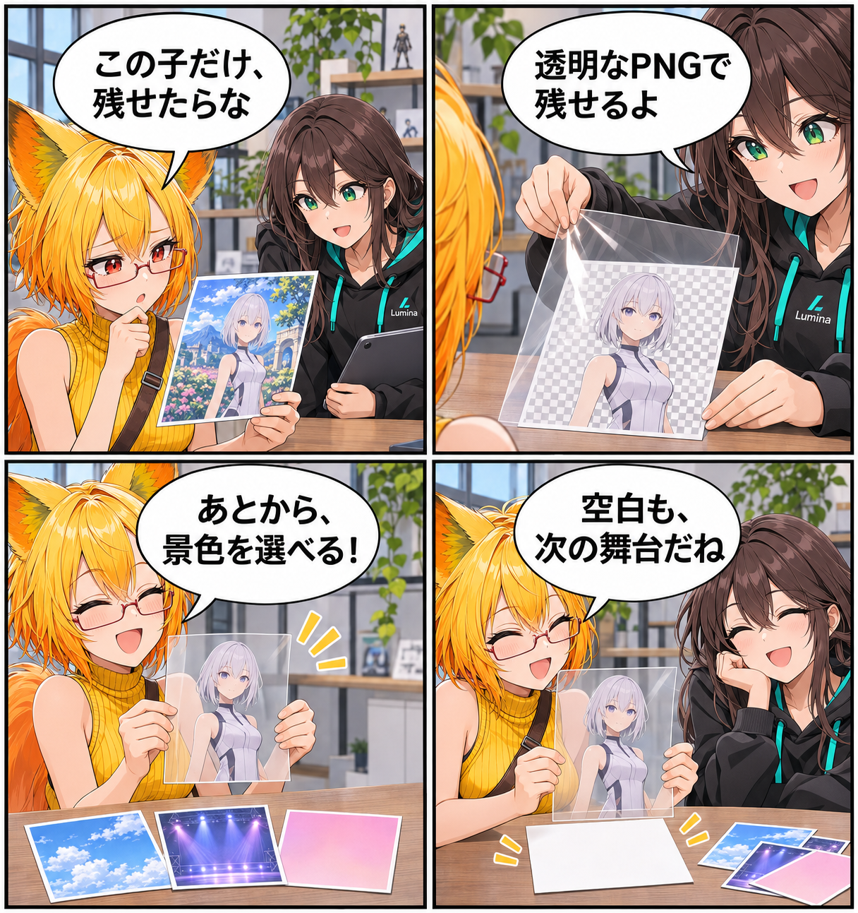

閑話休題：背景を消して、アバターを残す
新規実装の報告ではなく、VRASにすでにある透明背景PNGを含むスクリーンショット撮影を紹介する回です。背景を消してアバターを残し、次の表現へ持ち出せます。
main です。集計終了時点のHEADは aa5c7bc823b013fdfc622ec1d7aa1b85c9da8e5e、期間内コミットは0件でした。MainScene.unity の未コミット差分は、期間内の実装事実として確認できないため実績には含めていません。
背景を残すか、消すかを選ぶ
VRASはDesktopとVRの両方からスクリーンショットを撮影できます。通常の背景つき撮影に加え、背景を透明にしたPNGとして出力する経路があります。アバターそのものを後から別の紙面やデザインへ重ねたいとき、撮影時点で空間を切り抜く必要はありません。
撮るための見え方を、混ぜない
撮影に使うCameraの効果と、空間全体にかかる環境側の効果は分けて扱います。Viewer、HMD、鏡、物理カメラのプレビュー、最終キャプチャは同じ見え方をそのまま複製するものではなく、それぞれの適用範囲を持ちます。撮影画像にはライト操作ガイドのようなViewer補助表示を混ぜず、完了後は一時的なRenderTextureやCamera設定、Effect Scopeを戻す設計です。
サイズは撮影のために決める
新規設定の既定キャプチャ解像度はFHD（1920×1080）です。保存済みの撮影設定があればその値を優先し、撮影サイズのプリセットと上限は描画品質設定とは別に管理されます。出力先はユーザーデータのScreenshotsフォルダです。
4コマの話
今回は、背景がある写真を前に「ここだけ残せたら」と考える日常系の小話です。ろひが透明なフィルムを重ねるとアバターだけが残り、ルミナが後から置く場所を選べると伝えます。最後は空白のカードを前に、背景を消すことが「何もない」ではなく、次の置き場所を残すことだと気づく構成にしました。今日完成した機能ではなく、すでにVRASで使える撮影の選択肢を眺める回です。
まとめ
VRASのスクリーンショット撮影では、背景つきの画像だけでなく、透明背景PNGとしてアバターを残す選択肢があります。撮影の見え方と一時設定を分けて扱いながら、残したいアバターを次の表現へ持ち出せます。